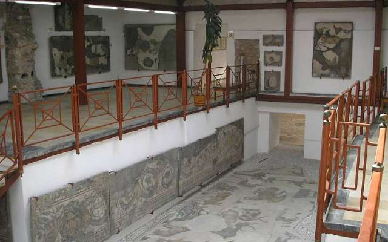
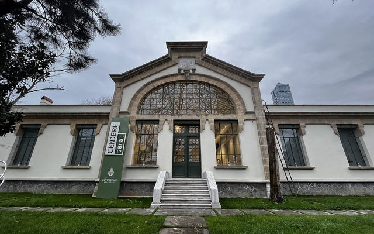
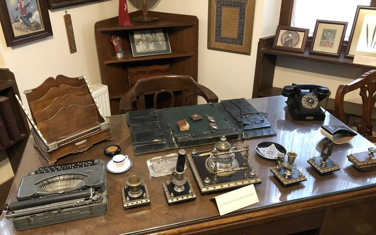
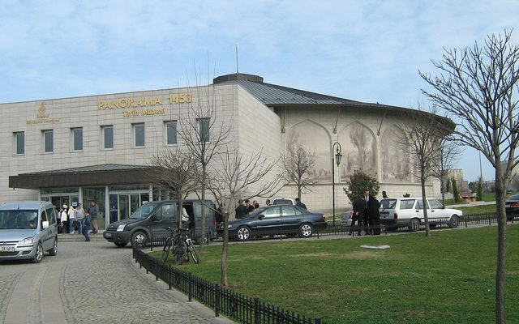
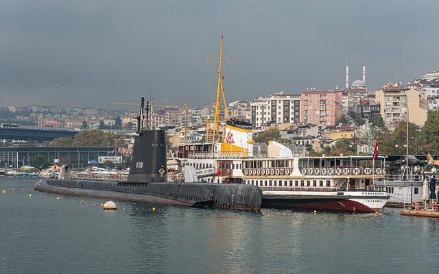
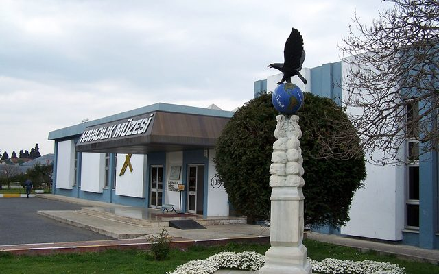

Der Kültür-Varlıkları-Führer verzeichnet 89 Orte in İstanbul: 52 museum, 21 burg & historisches bauwerk, 14 sakralbau, 2 ausgrabungsstätte. Unten finden Sie die Höhepunkte, eine Karte und die vollständige Liste.
⭐ Höhepunkte

Die Archäologischen Museen Istanbul in Gülhane im äußeren Garten des Topkapı-Palastes wurden als erstes modernes Museum des Osmanischen Reiches gegründet.

Das Mosaikmuseum des Großen Palastes unter dem Arasta-Basar in Sultanahmet zeigt die eindrucksvollsten Reste des Palastes, in dem byzantinische Kaiser jahrhundertelang…

Das Inselmuseum, 2010 in einem ehemaligen Hangar auf Büyükada eröffnet, erzählt die Geschichte der Prinzeninseln: vom byzantinischen Verbannungsort über das Sommerleben…
🗺 Auf der Karte
📍 Alle Orte (89)
Museum (52)
Archäologische Museen İstanbulMuseumMosaikmuseum des Großen PalastesMuseumMuseum AdalarMuseum Museum Adam MickiewiczMuseum
Museum Adam MickiewiczMuseum Museum Ara GülerMuseum
Museum Ara GülerMuseum ArterMuseum
ArterMuseum Askeri MüzeMuseum
Askeri MüzeMuseum Atatürk Müzesi (Şişli)Museum
Atatürk Müzesi (Şişli)Museum Museum Atlas 1948 İstanbul SinemaMuseum
Museum Atlas 1948 İstanbul SinemaMuseum Hagia-Sophia-Geschichts- und ErlebnismuseumMuseum
Hagia-Sophia-Geschichts- und ErlebnismuseumMuseum Museum Beyazıt Hamam KültürüMuseum
Museum Beyazıt Hamam KültürüMuseum Beykoz Cam ve Billur MüzesiMuseum
Beykoz Cam ve Billur MüzesiMuseum
Museum Cendere SanatMuseum Museum Elgiz Çağdaş SanatMuseum
Museum Elgiz Çağdaş SanatMuseum Museum FenerbahçeMuseum
Museum FenerbahçeMuseum Museum FethiyeMuseum
Museum FethiyeMuseum Florya Atatürk Deniz-PavillonMuseum
Florya Atatürk Deniz-PavillonMuseum Museum Galata MevlevihanesiMuseum
Museum Galata MevlevihanesiMuseum Museum Hafıza 15 TemmuzMuseum
Museum Hafıza 15 TemmuzMuseum Museum Kemal SunalMuseum
Museum Kemal SunalMuseum
Museum Kâzım Karabekir PaşaMuseum Museum MasumiyetMuseum
Museum MasumiyetMuseum Mehmet Akif Ersoy Hatıra-HausMuseum
Mehmet Akif Ersoy Hatıra-HausMuseum MiniatürkMuseum
MiniatürkMuseum Müze GazhaneMuseum
Müze GazhaneMuseum Museum Orhan KemalMuseum
Museum Orhan KemalMuseum
Museum Panorama 1453 TarihMuseum Museum PeraMuseum
Museum PeraMuseum Museum Pierre LotiMuseum
Museum Pierre LotiMuseum
Museum Rahmi M. KoçMuseum Museum Rezan HasMuseum
Museum Rezan HasMuseum Museum Sadberk HanımMuseum
Museum Sadberk HanımMuseum Museum Sait Faik AbasıyanıkMuseum
Museum Sait Faik AbasıyanıkMuseum Museum Sakıp SabancıMuseum
Museum Sakıp SabancıMuseum Salt GalataMuseum
Salt GalataMuseum Museum Türk Vakıf Hat SanatlarıMuseum
Museum Türk Vakıf Hat SanatlarıMuseum Türk ve İslam Eserleri MüzesiMuseum
Türk ve İslam Eserleri MüzesiMuseum Museum Türkiye İş BankasıMuseum
Museum Türkiye İş BankasıMuseum Museum Yahya KemalMuseum
Museum Yahya KemalMuseum Yıldız Porselen FabrikasıMuseum
Yıldız Porselen FabrikasıMuseum Museum santralistanbul EnerjiMuseum
Museum santralistanbul EnerjiMuseum Museum Çatalca MübadeleMuseum
Museum Çatalca MübadeleMuseum İslam Bilim ve Teknoloji Tarihi MüzesiMuseum
İslam Bilim ve Teknoloji Tarihi MüzesiMuseum İsmet İnönü Evi MüzesiMuseum
İsmet İnönü Evi MüzesiMuseum Museum İstanbul DenizMuseum
Museum İstanbul DenizMuseum
Museum İstanbul HavacılıkMuseum İstanbul ModernMuseum
İstanbul ModernMuseum Museum İstanbul OyuncakMuseumMuseum Hilmi Nakipoğlu Fotoğraf MakineleriMuseumHisart Canlı Tarih ve Diorama MüzesiMuseumMuseum Kandilli DepremMuseumMuseum İstanbul HavalimanıMuseum
Museum İstanbul OyuncakMuseumMuseum Hilmi Nakipoğlu Fotoğraf MakineleriMuseumHisart Canlı Tarih ve Diorama MüzesiMuseumMuseum Kandilli DepremMuseumMuseum İstanbul HavalimanıMuseumBurg & historisches Bauwerk (21)
 Festung AnadoluhisarıBurg & historisches Bauwerk
Festung AnadoluhisarıBurg & historisches Bauwerk Aynalıkavak-PavillonBurg & historisches Bauwerk
Aynalıkavak-PavillonBurg & historisches Bauwerk Beylerbeyi-PalastBurg & historisches Bauwerk
Beylerbeyi-PalastBurg & historisches Bauwerk Binbirdirek-ZisterneBurg & historisches Bauwerk
Binbirdirek-ZisterneBurg & historisches Bauwerk Bozdoğan KemeriBurg & historisches Bauwerk
Bozdoğan KemeriBurg & historisches Bauwerk Dolmabahçe-PalastBurg & historisches Bauwerk
Dolmabahçe-PalastBurg & historisches Bauwerk Ihlamur-PavillonBurg & historisches Bauwerk
Ihlamur-PavillonBurg & historisches Bauwerk Küçüksu-PavillonBurg & historisches Bauwerk
Küçüksu-PavillonBurg & historisches Bauwerk Kız-TurmBurg & historisches Bauwerk
Kız-TurmBurg & historisches Bauwerk Maslak KasırlarıBurg & historisches Bauwerk
Maslak KasırlarıBurg & historisches Bauwerk Rami Kışlası (Rami Kütüphanesi)Burg & historisches Bauwerk
Rami Kışlası (Rami Kütüphanesi)Burg & historisches Bauwerk Festung RumelihisarıBurg & historisches Bauwerk
Festung RumelihisarıBurg & historisches Bauwerk Theodosius SurlarıBurg & historisches Bauwerk
Theodosius SurlarıBurg & historisches Bauwerk Topkapı-PalastBurg & historisches Bauwerk
Topkapı-PalastBurg & historisches Bauwerk Festung YedikuleBurg & historisches Bauwerk
Festung YedikuleBurg & historisches Bauwerk Yerebatan-ZisterneBurg & historisches Bauwerk
Yerebatan-ZisterneBurg & historisches Bauwerk Yıldız-PalastBurg & historisches Bauwerk
Yıldız-PalastBurg & historisches Bauwerk Çemberlitaş Sütunu (Konstantin Forumu)Burg & historisches Bauwerk
Çemberlitaş Sütunu (Konstantin Forumu)Burg & historisches Bauwerk GalataturmBurg & historisches Bauwerk
GalataturmBurg & historisches Bauwerk Şerefiye-ZisterneBurg & historisches BauwerkFildamı-ZisterneBurg & historisches Bauwerk
Şerefiye-ZisterneBurg & historisches BauwerkFildamı-ZisterneBurg & historisches BauwerkSakralbau (14)
 Ahrida-SynagogeSakralbau
Ahrida-SynagogeSakralbau Denkmalmuseum Hagia IreneSakralbau
Denkmalmuseum Hagia IreneSakralbau Große Moschee Hagia SophiaSakralbau
Große Moschee Hagia SophiaSakralbau Bulgar Sveti Stefan (Demir)-KircheSakralbau
Bulgar Sveti Stefan (Demir)-KircheSakralbau Eyüp Sultan-MoscheeSakralbau
Eyüp Sultan-MoscheeSakralbau Chora-Kirche (Kariye-Moschee)Sakralbau
Chora-Kirche (Kariye-Moschee)Sakralbau Mihrimah-Sultan-Moschee (Edirnekapı)Sakralbau
Mihrimah-Sultan-Moschee (Edirnekapı)Sakralbau Rüstem Paşa-MoscheeSakralbau
Rüstem Paşa-MoscheeSakralbau St. Antuan-KircheSakralbau
St. Antuan-KircheSakralbau Blaue Moschee (Sultan-Ahmed-Moschee)Sakralbau
Blaue Moschee (Sultan-Ahmed-Moschee)Sakralbau Süleymaniye-MoscheeSakralbau
Süleymaniye-MoscheeSakralbau Studioskloster (İmrahor-Moschee)Sakralbau
Studioskloster (İmrahor-Moschee)Sakralbau Şehzade-MoscheeSakralbauFener Rum Patrikhanesi ve Aya Yorgi KilisesiSakralbau
Şehzade-MoscheeSakralbauFener Rum Patrikhanesi ve Aya Yorgi KilisesiSakralbau